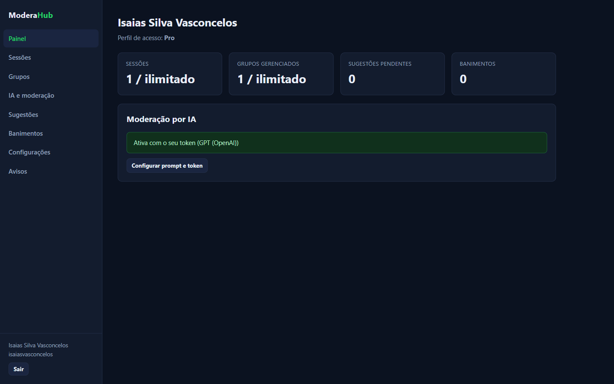
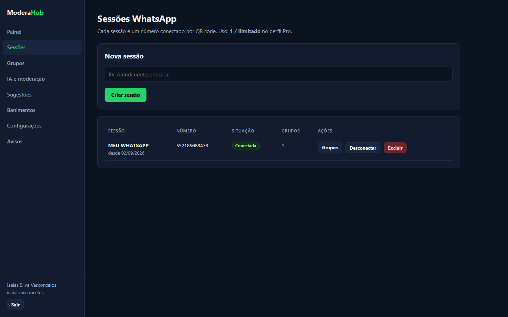
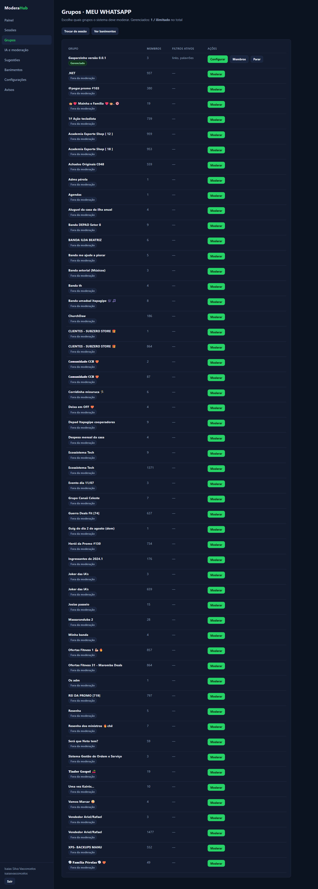
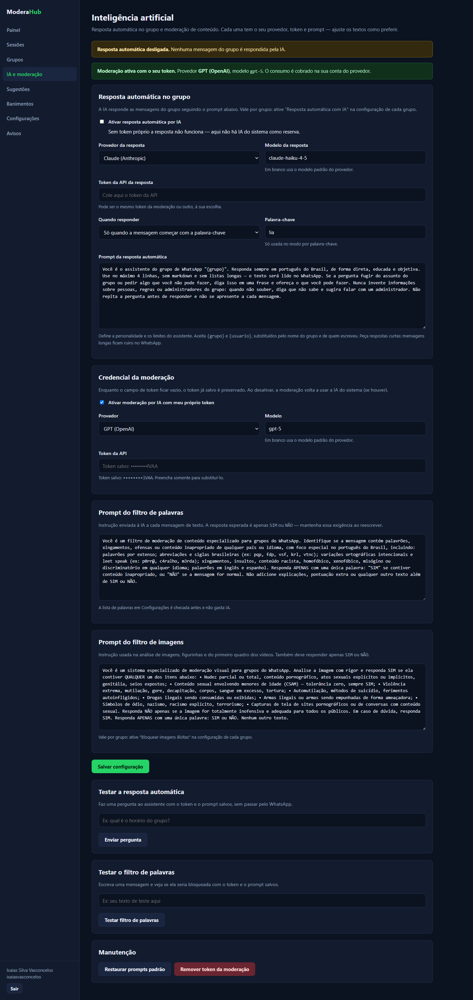
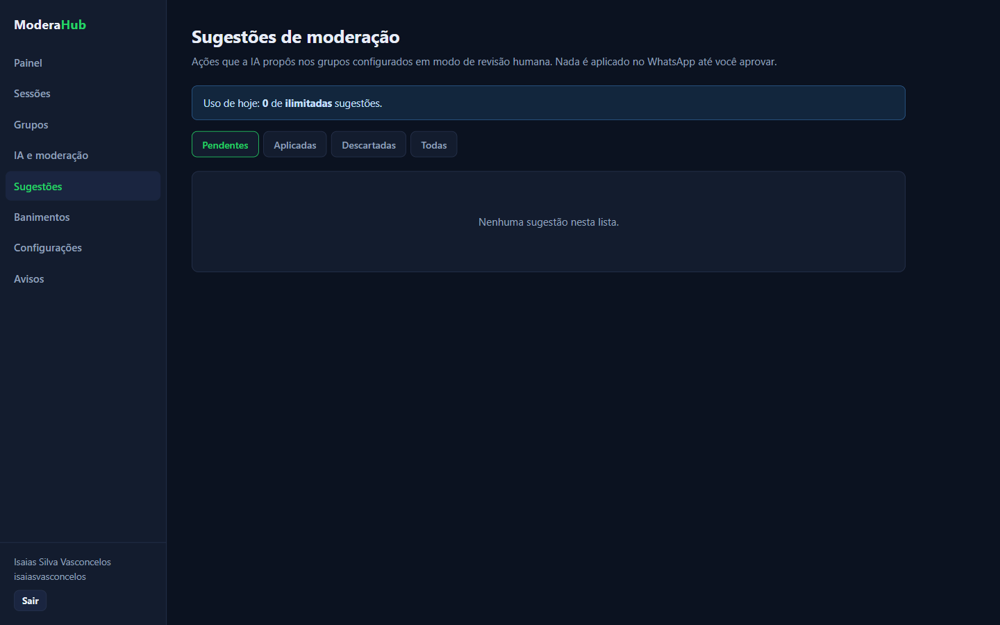
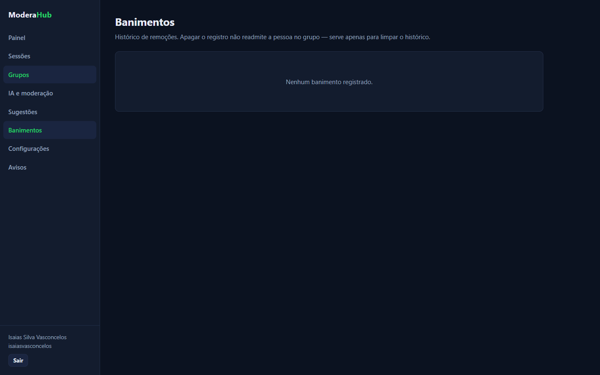
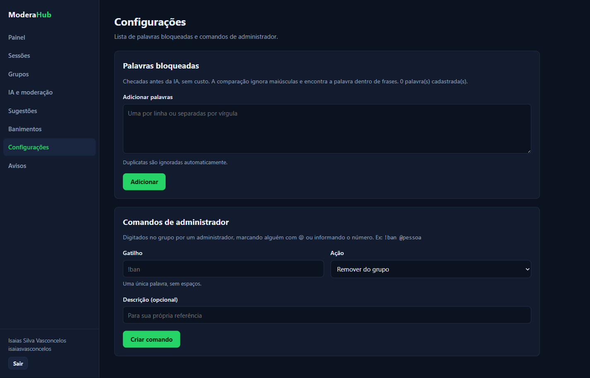
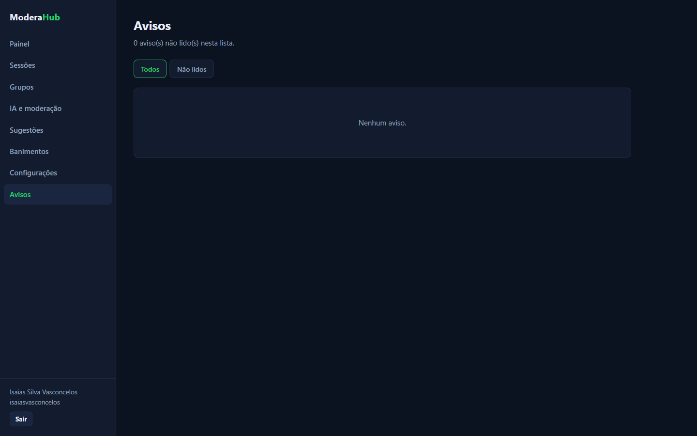
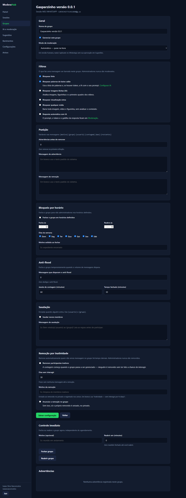

Tudo em um só lugar
Acompanhe sessões ativas, grupos gerenciados, sugestões pendentes e banimentos pelo painel.
Centralize suas sessões, configure regras personalizadas e use IA para manter suas comunidades mais organizadas e seguras.

Tenha os recursos necessários para acompanhar seus grupos, automatizar tarefas e manter o controle das ações realizadas.
Acompanhe sessões ativas, grupos gerenciados, sugestões pendentes e banimentos pelo painel.
Defina filtros, palavras bloqueadas, punições e comandos de administrador para cada grupo.
Automatize a moderação ou revise as sugestões da IA antes que sejam aplicadas.
Conheça os recursos do ModeraHub e organize a moderação dos seus grupos com mais praticidade.
Acompanhe rapidamente as principais informações da sua conta no ModeraHub, incluindo sessões ativas, grupos gerenciados, sugestões pendentes e banimentos.
Monitore sua operação de moderação com mais clareza e encontre rapidamente os recursos necessários.
Crie sessões identificadas por nome e conecte cada número do WhatsApp por QR code. Acompanhe o status da conexão e os grupos vinculados a cada sessão.
Tenha uma visão centralizada das suas conexões e controle rapidamente o acesso aos grupos.

Gerencie todos os grupos vinculados à sua sessão em um único lugar. Veja a quantidade de membros, os filtros ativos e ative ou interrompa a moderação.
Aplique as regras certas onde necessário e mantenha as conversas mais organizadas.

Configure respostas automáticas e modere textos, imagens, figurinhas e vídeos com Claude, GPT e Gemini. Personalize prompts, modelos, palavras-chave e critérios usando seus próprios tokens de API.
Economize tempo e reduza conteúdos inadequados com regras ajustadas à sua comunidade.

Acompanhe as ações propostas pela IA para grupos configurados no modo de revisão humana. Analise as sugestões e decida o que será aplicado no WhatsApp.
Mantenha o controle sobre a moderação e aprove cada ação com segurança.

Consulte o histórico de pessoas removidas dos grupos e mantenha os registros organizados em um só lugar.
Preserve um registro claro das remoções realizadas, sem confundir a limpeza do histórico com a readmissão.

Cadastre palavras bloqueadas e crie comandos exclusivos para administradores controlarem ações no grupo de forma rápida e padronizada.
Reduza o uso da IA em bloqueios simples e dê mais agilidade aos administradores.

Consulte todos os avisos do ModeraHub em um único lugar e filtre a lista para visualizar apenas os itens não lidos.
Identifique rapidamente as informações que ainda precisam da sua atenção.

Configure filtros de conteúdo, personalize punições e automatize ações para manter as conversas organizadas e seguras.
Reduza o trabalho dos administradores com regras automáticas e proteção contra excesso de mensagens.

Escolha como cada grupo será gerenciado: com punição imediata ou com revisão humana das sugestões da IA.
Entre em contato e conheça o ModeraHub para tornar sua operação de moderação mais clara, segura e eficiente.
Entre em contato para começar →